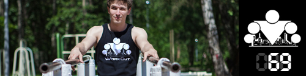

Since we started this week talking about new exercises, today's infopost is a logical next step: we will try to systematize various popular exercises by muscle groups and difficulty level.
IMPORTANT!!!
The information in this week's infoposts is given for educational purposes only, and to widen your horizons. We recommend using it AFTER you finish the program.
Basis of the classification
There is already a huge number of bodyweight exercises, but the idea of Street Workout is that people use their imagination and constantly invent something new. And that is great! The problems start when you try to structure everything that exists into one system.
We took the simple path and singled out two main characteristics of any exercise: the main muscle group and the load level.
Exercise type — even though there is a huge number of bodyweight exercises, all of them can be put into one of several basic types. We ended up with 7:
1. Floor push-ups
2. Pull-ups
3. Parallel bar dips
4. Muscle-ups
5. Squats
6. Abs exercises
7. Other
Most exercises involve several muscle groups at once, and that is why they are so effective, so we decided to split them not by the working muscles, but by type.
Load level — this is a parameter that reflects the load the muscles take in a given exercise. It is built on biomechanics and physics: range of motion, weight, number of muscles involved, and so on. There are easier exercises and harder ones; we tried to split all the exercises into levels.
Level I (roughly for beginners) — easier variations of the exercises, which are simpler than the exercise itself, and thanks to which you can build up strength.
Level II (roughly for advanced) — the exercise itself and its various variations.
Level III (roughly for masters) — harder variations of the exercise that let you give the muscles more load and shorten the workout.
Inside a given level the exercises are in random order.
Floor push-ups
Level I
1. Knee push-ups
1.1. Wide-stance knee push-ups
1.2. Close-stance knee push-ups
2. Incline push-ups
Level II
0. Floor push-ups
0.1. Wide-stance floor push-ups
1. Deep push-ups
2. Wall-supported push-ups (feet on the wall)
3. Slow push-ups
3.1. Pause push-ups
4. Explosive push-ups
4.1. Clap push-ups
5. Single-leg push-ups
6. Staggered (chess) push-ups
6.1. Traveling push-ups
7. Offset push-ups
8. Side-kick push-ups
9. Shuffle push-ups
10. Isometric push-ups
11. Fist push-ups
12. Decline push-ups (feet elevated)
13. Hindu push-ups
14. Archer push-ups
14.1. Slide push-ups
15. Single-bar push-ups
16. Tiger push-ups
17. One-and-a-half push-ups
18. Unstable push-ups
19. Knee-to-elbow floor push-ups
20. T push-ups (warrior push-ups)
21. Close-stance push-ups
21.1. Diamond push-ups
Level III
1. Aztec push-ups
2. Triceps extensions
3. Iguana push-ups
4. Clap-between-the-legs push-ups
Pull-ups
Level I
1. Australian pull-ups
1.1. Underhand Australian pull-ups
2. Negative pull-ups
3. Partial pull-ups
Level II
1. Parallel-bar pull-ups
2. Underhand pull-ups
3. Bar pull-ups
4. Wide overhand pull-ups
5. Horizontal row on parallel bars
6. Grip-change pull-ups
6.1. Traveling pull-ups
6.2. Unstable pull-ups
6.3. Spin
7. Close-grip pull-ups
7.1. L-sit close-grip pull-ups
7.2. Underhand L-sit close-grip pull-ups
8. Tuck overhand pull-ups
8.1. Tuck underhand pull-ups
9. Side-to-side pull-ups
10. Pause pull-ups
11. Slow pull-ups
12. Neutral-grip pull-ups
13. Archer pull-ups
14. Knee-to-chest pull-ups
15. One-and-a-half pull-ups
16. X pull-ups
17. Clap pull-ups
Level III
1. In the Matrix
2. L-sit pull-ups to the stomach
3. Hannibal pull-ups
4. Chair
5. Typewriter
6. Steps in the air
Parallel bar dips
Level I
1. Reverse dips (bench dips)
Level II
1. Parallel bar dips
2. Slow parallel bar dips
3. Shoulder to shoulder
4. Russian parallel bar dips
5. Bar dips
6. Traveling parallel bar dips
7. Alternating parallel-bar and bar dips
8. 180-degree turn on the bars
9. Korean dips
10. Closed-planche dips
Level III
1. SPb 270 degrees
2. Parallel bar dips with a clap in front
2.1. Parallel bar dips with a clap behind the back
2.2. Parallel bar dips with a clap between the legs
3. 180 on the bars
Muscle-ups
Level I
1. Jumping muscle-up
2. One-arm muscle-up
Level II
1. Muscle-up
2. Underhand muscle-up
3. Mixed-grip muscle-up
4. Grip-change muscle-up
5. Close-grip muscle-up
6. Wide-grip muscle-up
7. Clap muscle-up
Level III
1. Cross-grip muscle-up
2. Zef muscle-up
3. Muscle-up on poles
4. Slow muscle-up
Squats
Level I
1. Supported squats
2. Sit-to-stand squats (to a chair)
3. Step-ups onto an elevation
4. Horse stance
Level II
1. Squats
1.1. One-and-a-half squats
1.2. Traveling squats
1.3. Pause squats
1.4. Unstable squats
2. Lunges
2.1. Side lunges
2.2. Unstable lunges
2.3. One-and-a-half lunges
2.4. Pause lunges
2.5. Traveling lunges
2.6. Jumping lunges
3. Calf raises
3.1. Single-leg calf raise
4. Bulgarian split squats
5. Glute bridge
5.1. Single-leg glute bridge
6. Spartan squats
7. Jump squats
Level III
1. Single-leg squats
Abs exercises
Level I
1. Crunches
2. Knees to chest
3. Knees to horizontal
3.1. Straight-leg raise to horizontal
4. Lying leg raises
Level II
1. Straight-leg raise to the bar
2. Leg raises in support on the parallel bars
3. L-sit on the bar
4. L-sit on the floor
5. L-sit on the parallel bars
Level III
1. Windshield wipers
2. V-ups
Other
1. Back lever
1.1. Closed back lever
1.2. Back lever with bent legs
1.3. Back lever with one bent leg
1.4. Negative lowers into a full back lever
1.4.1. Negative lowers into a straddle back lever
1.5. Pull-ups in a back lever
2. Handstand
2.1. Handstand push-ups
3. Hannibal planche
4. Dragon flag
4.1. Dragon flag from a pole
5. Human flag
6. Front lever
7. Giant swings